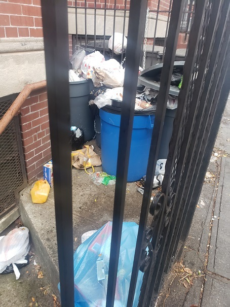

Rat complaints and NYC’s rat problem

Everyone has a story about rats — or more likely, a complaint. If you have made a complaint using 311, you may wonder who receives it, and how it fits into the bigger picture of rat mitigation.
What happens to my 311 complaint?
Each year, the Health Department gets about 40,000 complaints about rat activity through 311 (you can explore these data on NYC Open Data).
When you submit a complaint via 311, it goes to the NYC Health Department, which is responsible for enforcing the New York City Health Code requirement that building owners keep their properties pest-free. The Health Department checks your complaint against our records. If the property hasn’t been inspected recently, the Health Department will send an inspector.
What happens during an inspection?
When inspectors visit a property, they look for two major things:
- Signs of rats, like burrows, droppings, and gnaw or rub marks
- Conditions that support rats:
- Unsealed trash cans or loose food garbage they can eat
- Build up of old materials that rats can use to create nests, like piles of cardboard boxes or old equipment
- Cracks or holes they can live in

If a property has either signs of rat activity or conditions that support rats, it fails the inspection. The Health Department sends the property owner a Commissioner’s Order to Abate (COTA), an inspection report detailing the findings and guidance on how to fix the problem.
If the property is City-owned, the Health Department contacts the agency that manages the property to fix the issues.

A few weeks after the initial inspection, the Health Department conducts a compliance inspection to check whether the property owner has addressed the problem. If the owner hasn’t fixed it, the Health Department will issue a summons subject to fines to the owner.
In some cases, where conditions are especially severe, a Health Department exterminator may treat the property and bill the owner for the work.


How to make a rat complaint – the smart way
Not every complaint will trigger an inspection. If a property has recently been inspected, a new complaint won’t trigger another inspection. To find out if a new complaint will help, visit the Rat Information Portal for up-to-date inspection results. You can look up an address and see when it was last inspected, and if it passed or failed.
Read more about how inspection data is the key to understanding rat activity.
Get involved
Want to help work toward a cleaner New York City?
- Join the Rat Pack, NYC’s squad of anti-rat community members.
- If you’re a property owner, learn about rat prevention and management.
- Enroll in a Health Department Rat Academy class – it’s free!
- Read about the best ways to control rats.
- Learn more about the Health Department’s rat control program.
If we work together, we can reduce rats in our communities and prevent them from harming our parks, homes, and make our neighborhoods more livable.
NYC Health Department
Published on:
June 12, 2025